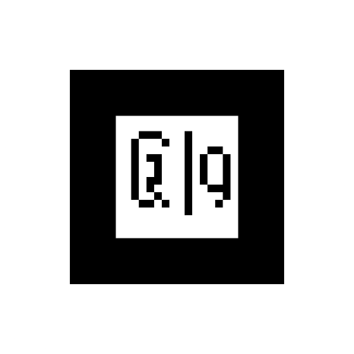

جولة رقمية · ثقافة سعودية
أربع وقفات: خيمة، دلة، سيف، وأخيراً مبخرة.
تزخر الجزيرة العربية بإرث حضاري عريق يمتد لآلاف السنين. هذه القطع ليست مجرد أدوات، بل هي رموز حيّة تحكي قصة الإنسان السعودي: كرمه، شجاعته، وارتباطه العميق بأرضه. من خلال هذه الجولة، ستستكشف أربع قطع أثرية بالواقع المعزّز وتعيش تجربة التراث بشكل لم تختبره من قبل.
الخيمة
الدلة
السيف

المبخرة